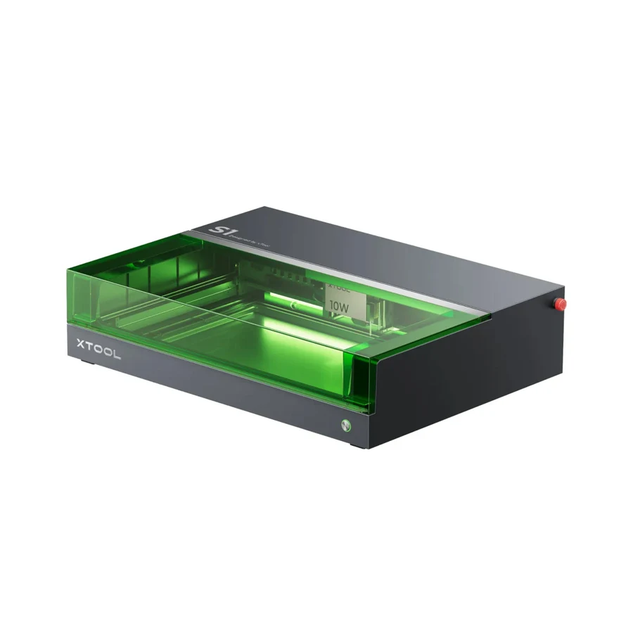

Notice
Look closely and choose a question worth investigating.
What we explore / Questions worth following
Engineering, art, and design become connected ways of investigating the world.
Illustrative project directions · These are not currently scheduled courses.
Exploration 01 / Light, photography & optical sensing

What changes when we move the light, change a lens, or ask software to interpret an image? Learners could construct a simple imaging experiment, compare results, and explain what they observe.
A small image study with a clear question, controlled comparisons, and a visual explanation.
Exploration 02 / Electronics, robotics & physical computing

A sensor notices a change. A program makes a decision. A circuit responds. Learners could combine these elements into a small device, then measure whether it behaves as intended.
A functioning prototype, a sketch of how it works, and a record of what changed during testing.
Exploration 03 / Spatial design, materials & fabrication

How does a flat sheet become a useful object? Learners could sketch a small structure, create its digital parts, fabricate an assembly, and revise its geometry after a fit test.
A physical model accompanied by drawings, material decisions, and an account of the design process.
A repeatable habit of invention
Look closely and choose a question worth investigating.
Sketch, model, program, or fabricate a first attempt.
Measure what happens and compare it with the intention.
Share the result, including what failed and what comes next.
A studio taking shape
We’re shaping the first learning experiences for curious students in grade 5 and above.
Start a conversation